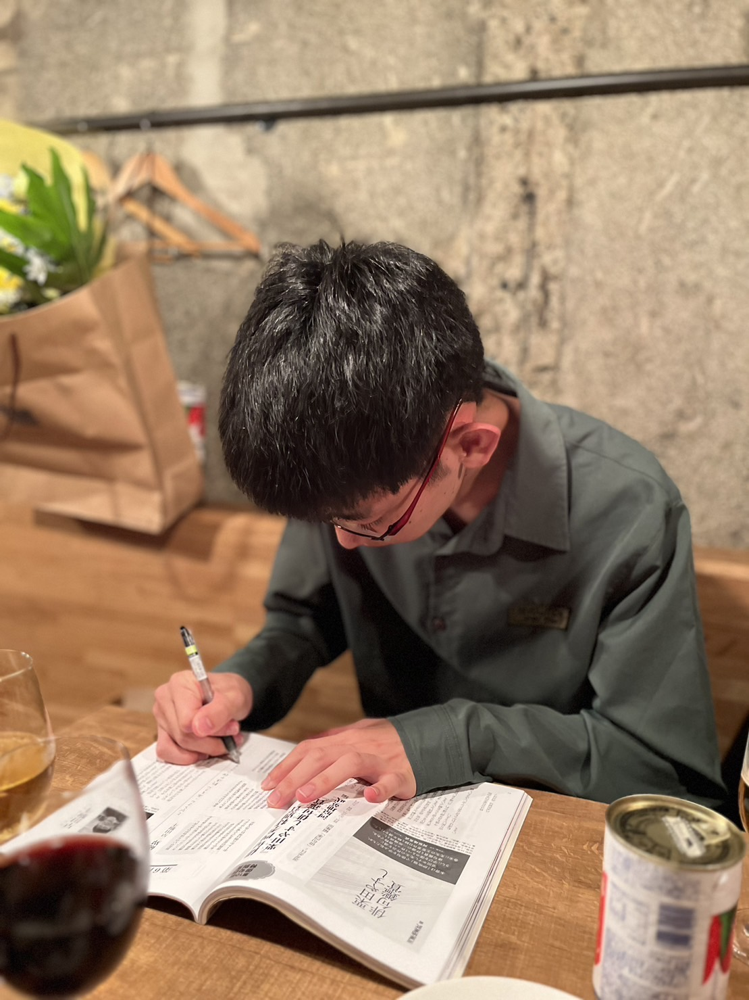

About Me

業務経験
業務委託契約を通じて、英語指導業務を受注していました。具体的には、2020年から大学受験生に向けた英作文指導をチャット形式で、21年から中学生・高校生/既卒生に向けた大学受験英語答案作成指導を通話形式で、22年からEngooでオンライン英会話講師として英会話指導をビデオ通話形式で実施してきました。こレッスン/ティーチング/コーチングなどをご希望のかたは、いつでもお問い合わせページからご一報ください。
言語学習状況/資格
英語
- TOEIC Listening & Reading Test 990点 (23年)
- 実用英語技能検定 一級 合格 CSE2706 (22年)
- TOEIC Speaking & Writing Test 370点 (21年)
中国語
- HSK (漢語水平考試） 6級 213点 (25年)
- HSK (漢語水平考試） 5級 218点 (24年)
- 中国語検定試験 2級 合格 (26年)
- 中国語検定試験 3級 合格 (24年)
スペイン語
- 2020年から2021年までの2年間学習していました
- Entre Amigosと新版スペイン語の入門を使って文法は一通り既習です
- 試験は受けたことがありませんが、来年中には受けたいと考えています
インドネシア語
- 2025年から勉強しています
- 快速マスターインドネシア語を使って文法の勉強をしました
- 同じく試験は受けたことがありませんが、来年中には受けたいと考えています
俳句
- 2020年から実作しています。掲載されたもののいくつかです。
- 第三十五回伊藤園お〜いお茶新俳句大賞佳作「階段のほこり古べば蝶の昼」
- 第三十四回伊藤園お〜いお茶新俳句大賞佳作特別賞「非常口から蝶々の群れふたたび」
- 第22回あらかわ俳壇一般の部入選「秋こぼれ落ちて蝶々とは微光」
- 角川俳句令和俳壇秀逸句「星の夜を噛み締めてゐる炬燵かな」
- 角川俳句令和俳壇秀逸句「秋の声どこかしはがれてはないか」
- ※以上が本名名義での俳句入選作です。ですが実は、俳句については別名義を持っています。
短歌
- 2025年から実作しています。以下、毎日歌壇水原紫苑選として毎日新聞に掲載されたものです。
- 「我らいま綻びゆく一族なりき隣国の梨ひかり止まざる」
- 「蝋梅の実を見てよりや水を乞ふ君を静かな楽器と思ふ」
- 「まだ誰の枯野を汚すこともなきぬるき空気をタイヤに充たす」
- 「自転車は円と棒なり えいゑんに星を零してゐる冬銀河」
- 「太陽は光の石碑 君が君の時間にやつて来てからが夏」
- 「空といふ布いちまいに覆はれて我らに夙き聖五月来る」
- 「罌粟の花ひらかむとして罌粟坊主ゆるるは風の贄ならなくに」
- 「ところてん突き永らへし夕景よ槍のごとくに痩躯投げたし」
- 「蝙蝠は鋼のにほひ ひととせを十二の月はおのづから燃え」
- 「あぢさゐの王宮 君のをらざれば甘やかに尖る雨粒の角」
- 「青嵐止まばピアノの質量に宇宙は潰れゐたりはせぬか」
- 「夏至の夜の果てて美し水脈のやうにあなたの手のひらを手相」
- 「粉々の月光よ我が背泳の進めば水の縒れつかげりつ」
- ※短歌は全て本名名義です。「新古典派」にもろに影響を受けています。かっこいい。
「貰ひ損ねし銀環は海底にきつとある 極夜をわたくしす」
「カーソルの先に港の明かりある真白き思考飼ひ慣らすなり」
「この駅は磁場のある駅 さざめきの牡丹雪なる夜を組み上ぐる」
「まひるまはとはに春なる鳩といふ鳩のちひさく鳴くをききたり」
「はるといふ音はればれと撥ね返す春の光のかよへる白紙」
「さよならと口が動きぬ春空は雲ひからするゆゑのみづ色」
「目瞑ればさらに獣もあらはれず 白木蓮は清らなる檻」
「電車行き交はして地上なり 花はひるのすがたをして現るる」
略歴
平成12年生。もともとはJR八高線ユーザー。今は、東急東横線ユーザー。2023年9月から2025年7月まで北京に住んでいました。言葉が好きで、もともとは俳句から出発したのですが、気がついたら、結構いろいろな言語に手を出すことになりました。趣味は、ランニング、旅、俳句、短歌、将棋です。